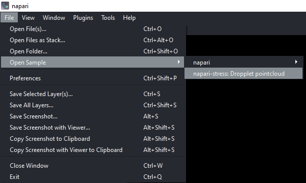

Visualize measurements
Contents
13. Visualize measurements#
Napari-stress offers functionality to visualize measured data interactively in the napari viewer. This tutorial provides guidance on how to use these.
13.1. Sample data#
To get started, create a pointcloud according to the workflow suggestions in this repository or load the sample data from napari-stress (File > Open Sample > napari-stress: Droplet pointcloud).


Create a spherical harmonics expansion with Tools > Points > Fit spherical harmonics (n-STRESS):

13.2. Visualize features #
Features in the napari ecosystem are measurements that are assigned to a single Point (Points layer), label (Labels layer), or Surface vertex (Surface layer). In the context of napari-stress, such measurements include point-wise spherical harmonics expansion errors, curvature, etc. To do so for the created sample data, open the widget for this from Tools > Utilities > Visualize pointcloud features (n-Stress).

In the dropdown labelled x axis key, you’ll see all available measurements for the selected layer - in this case, the feature to be visualized is called error and corresponds to the fit residue of the spherical harmonics expansion. By changing the number of bins (n bins) and clicking on Update you can change the number of bins of the histogram and apply the changes:

You can additionally show the cumulative distribution function (CDF) by clicking on the CDF button:

Lastly, to explore the histogram/CDF distributions interactively, you can select parts of the histogram by drawing a rectangular selection on the plot:

Note that the points pertaining to features in the respective range are highlighted in the viewer. You can also change the range of the selection by using the Upper percentile and Lower percentile spinboxes.
To plot a different feature, select it from the dropdown and click Update to apply.
13.3. Export data #
Lastly, you can export the displayed (histogram) data as a .csv file using the Export plot as csv button.